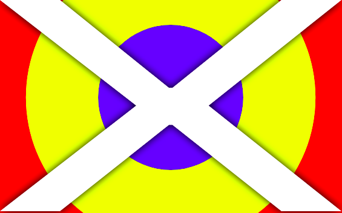

The Real Primary Colors
Why the primary colors you learned in school should not be considered primary colors, and the difference between additive and subtractive color modelsWere you taught that the 3 primary colors were red, yellow, and blue?
This is called the RYB color model.
Those three colors supposedly can't be made by mixing other colors, but can make other colors.
For example, red + yellow = orange, and blue + red = purple.
However, this is all false.
"Why? It works with paint!"
Yes, it works with paint. That's actually one of the few applications for it. It's useless unless you're an artist.
RYB is a subtractive color model, meaning the more colors you add, the darker color you get. This is why you get a brown when mixing all the paint colors together.
Meanwhile, light is an additive color model, meaning the more colors you add (in this case light wavelengths), the lighter the color gets.
To help you see colors of light, the red, green, and blue cones in your eyes use the RGB color model, which is additive.
Even though RYB is easier to teach (using paint), RGB is what should be taught in schools since it has more use cases. Try playing with it yourself!
Red Level: 255
Green Level: 0
Blue Level: 255
The RGB value of this article's background is 28, 31, and 34. See if you can match it!
More rants